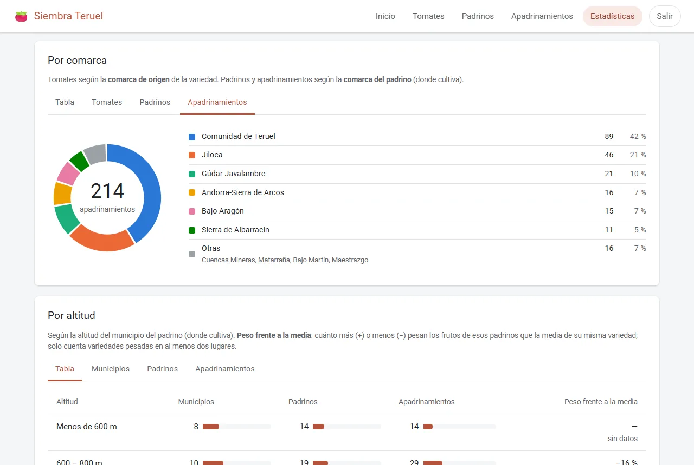

Siembra Teruel: the tomatoes in CITA's Seed Bank
Siembra Teruel is a project by CITA (the Agrifood Research and Technology Centre of Aragon) in which people from all over the province of Teruel, the sponsors, grow traditional tomato varieties from its Seed Bank.
For the 2026 campaign I built a private web dashboard where the CITA team can see the 56 varieties, 180 sponsors and 214 sponsorships in one place, with their photos, comments and lab records.
Screenshots
-

-

-

-

What's in the dashboard
-
The varieties
- A searchable list and a map of where each one comes from
- A page for each variety, with a summary of the lab measurements
- The same variety compared across the places where it is grown
-
Sponsors and sponsorships
- A page for each sponsor, with the varieties they grow
- Each sponsorship with its photos and comments in order
- The lab record: fruit weight and size, and degrees Brix
-
Statistics
- Participation by district and by altitude, in charts and tables
- A first look at how the fruit changes with altitude
Private and easy to maintain
The dashboard is private: only the CITA team can sign in, with their own accounts. The sponsors' personal data is not published anywhere, and the screenshots on this page show none of it.
Built with HTML, CSS and JavaScript, with no frameworks or build step, Firebase (servers in Europe) for data and accounts, and maps with Leaflet and OpenStreetMap. The code is in Spanish so that CITA can maintain it.
If you run a citizen science project or a seed bank and want to get its data in order, let's talk.